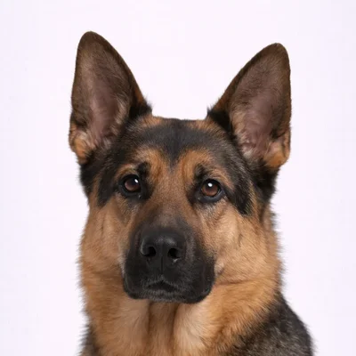
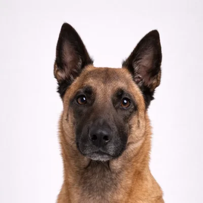

Berger Allemand vs Malinois Belge
Deux des meilleurs chiens de travail au monde. Tous deux excellent dans le travail policier, militaire et de protection — mais ils sont étonnamment différents.

Berger Allemand
Le chien de travail le plus connu
Le Berger Allemand est polyvalent, intelligent et loyal. C'est la race la plus utilisée pour le travail policier et militaire dans le monde, et c'est aussi un excellent chien de famille pour les propriétaires expérimentés.
Voir le profil complet →
Malinois Belge
Le favori des forces spéciales
Le Malinois est intense, rapide et incroyablement motivé pour travailler. Ils remplacent les Bergers Allemands dans de nombreuses unités spéciales en raison de leur énergie extrême et de leur endurance athlétique.
Voir le profil complet →Comparaison côte à côte
| Attribut | Berger All. | Malinois |
|---|---|---|
| 📏 Taille | Grand 55-65 cm, 22-40 kg |
Grand 56-66 cm, 20-30 kg |
| ⏳ Espérance de vie | 9-13 ans | 12-14 ans |
| ⚡ Énergie | ●●●●○ Élevée |
●●●●● Extrême |
| 🎓 Éducabilité | ●●●●● Excellent |
●●●●● Excellent |
| 👶 Enfants | ●●●●○ Bon |
●●●○○ Modéré |
| 🏋️ Motivation au travail | ●●●●○ Très élevée |
●●●●● Inarrêtable |
| 🌍 Origine | Allemagne | Belgique |
🎯 Lequel vous convient ?
Choisissez un Berger Allemand si...
- ✓Vous voulez une combinaison chien de famille et de travail
- ✓Vous avez des enfants à la maison
- ✓Vous voulez un tempérament légèrement plus calme
- ✓C'est votre premier chien de travail
Choisissez un Malinois si...
- ✓Vous êtes un propriétaire de chien expérimenté
- ✓Vous avez du temps pour 2-3+ heures d'activité quotidienne
- ✓Vous voulez faire de la compétition canine
- ✓Vous valorisez une espérance de vie plus longue
⚠️ Note importante
Le Malinois n'est PAS un chien pour débutants. Ils nécessitent un propriétaire très expérimenté et beaucoup de stimulation. Sans travail et exercice adéquats, ils peuvent développer des problèmes comportementaux.